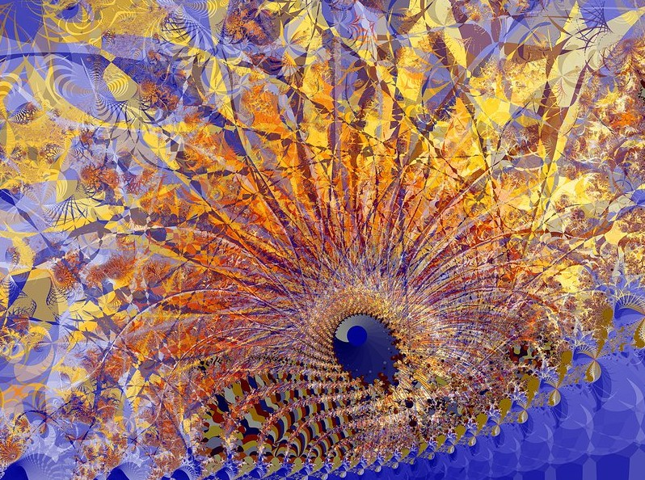
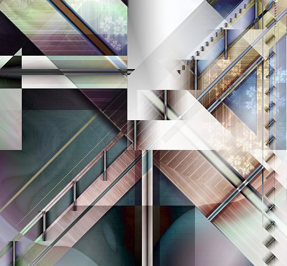
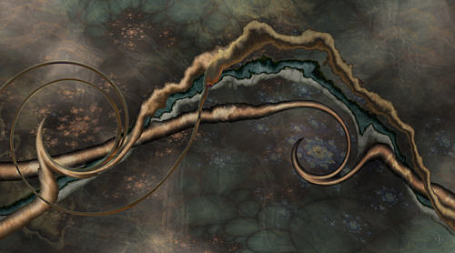
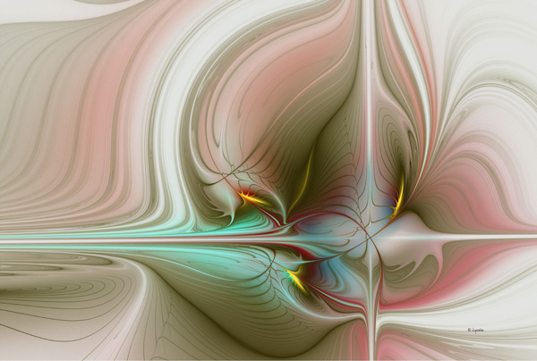

IMAGES OF THE DAY 82
09/21/2023 - 09/30/2023

Algorithmic/Fractal
Mathematics and Digital Art
09/21/2023
Carnaval
by Gunther Meliton
Click image to access artist's full exhibit

Algorithmic/Fractal
09/22/2023
Prospect
by Yvonne Mous
Click image to access artist's full exhibit
Algorithmic/Fractal
09/23/2023
No. 02
by Domenico Nadile
Click image to access artist's full exhibit
Algorithmic/Fractal
09/24/2023
Celtic Journey
by Shari Nees
Click image to access artist's full exhibit

Algorithmic/Fractal
09/25/2023
Ancestors Dimension
by Karoly Nemeth
Click image to access artist's full exhibit


09/26/2023
Algorithmic/Fractal
Sudionis
by Janet Parke
Click image to access artist's full exhibit

09/27/2023
Algorithmic/Fractal
Concupiscence
by Debi Peralta
Click image to access artist's full exhibit
09/28/2023
Algorithmic/Fractal
Three Stars, No. 1
by Juergen Schwietering
Click image to access artist's full exhibit

09/29/2023
Algorithmic/Fractal/Digital
Imagine-It-5
by Rod Seeley
Click image to access artist's full exhibit
09/30/2023
Algorithmic/Fractal
Organic Machine 01
by Virginia Small
Click image to access artist's full exhibit

BACK TO IMAGES OF THE DAY 81
NEXT